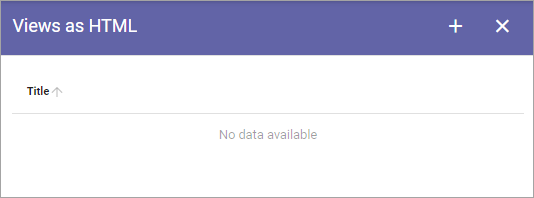

Views as HTML¶
If you will use HTML settings for the views on the screens, add the different views here. (This is very similar to the view settings for Info Screen).
The first you see is the list of views that has been created so far (none in this example):
To edit a view, click the pen. When editing a view all settings described below can be edited.
To add a new view, do the following:
Click the plus.
Add a title (used when chosing a vew for a screen settings).
Select type of View; One Column Full Width, One Column Wide Width or One Column Normal Omnia Width.

For the six topmost fields, you select the Property to get the information from. Just open the list and select property.
Set the following:

Delay Time Before scroll (seconds): Set the delay time before next scroll.
Scrolling Speed: Use the slider to set speed of the scroll.
Delay Time after scroll (seconds): Set the delay time after a scroll.
Scrolls Whole Page: Select this if you want the whole page to scroll.
Show Likes/Comments: Select if Page Likes and Comments should be shown on the screen.
Logo Url: To display a logo, add the url here.
Logo Position: You can select to display the logo Top Right, Bottom Right, Top Left or Bottom Left.
Logo Visibility: You can turn Logo display on or off here.
Logo Size: Use the slider to set logo display size.
Indicator Position: You can select to display the Indicator Top Right, Bottom Right, Top Left or Bottom Left.
Slides Indicator Color: Use this option if you need to change Slides Indicator Color.
Count Down Text Color: Use this option if you need to change the Count Down Text Color.
Indicator Visibility: You can turn Indicator display on or off here.
Save when you’re done.